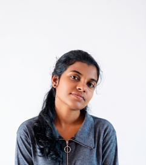

Undergraduate Research Team (R26-IT-063)
Illangasinghe I.M.L.K.B
👑 Team LeaderLeads research group R26-IT-063 and develops predictive regression models mapping soil N-P-K nutrient depletion to balanced chemical fertiliser dosage formulations.
✉️ lahiruilangasinha@gmail.com
Bandara P.A.I.A
Develops multi-class Random Forest classifiers integrating regional rainfall, temperature, and soil pH to recommend viable crops with month-by-month cultivation guides.
✉️ it22103468@my.sliit.lkApsal K L T
Engineers microcontroller IoT field telemetry nodes capturing continuous volumetric moisture and environmental data, implementing edge anomaly triggers for automated alerts.
✉️ it22226846@my.sliit.lkMudiyanselage K
Constructs time-series econometric models forecasting weekly wholesale price trajectories across regional economic centers to protect farmers against price crashes.
✉️ it22104694@my.sliit.lkProject Supervisors
Ms. Hansika Mahaadikara
Provides academic oversight, research design guidance, methodology validation, and algorithmic verification for the project.
Ms. Sanjeevi Chandrasiri
Provides specialized technical supervision for IoT edge architectures, telemetry protocols, and hardware calibration.